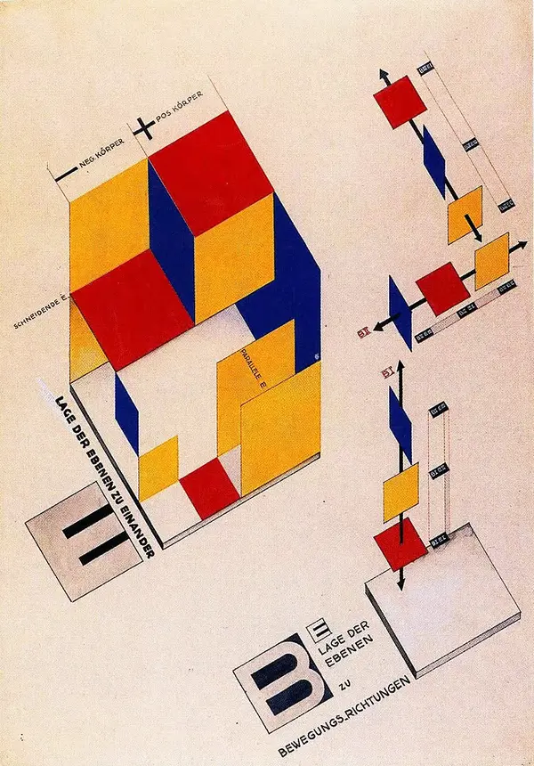
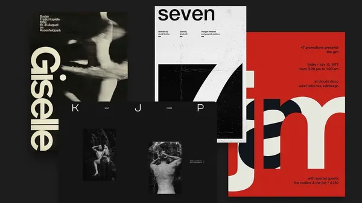
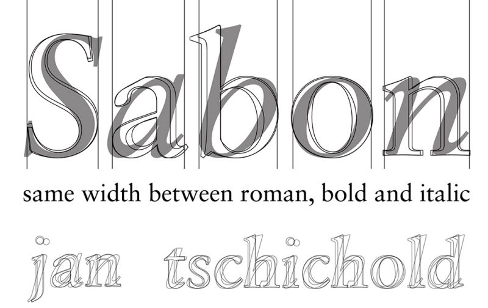
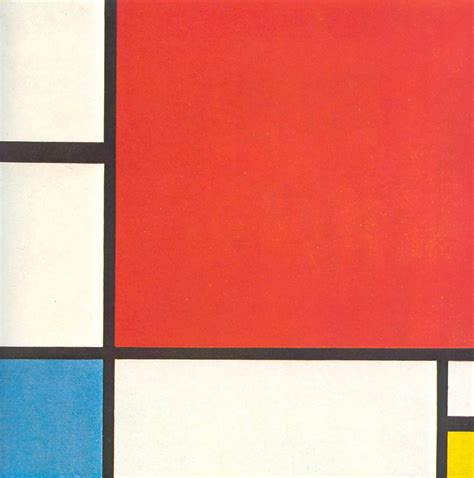

A Engenharia por trás da Estética
O Léxico é uma plataforma de documentação focada na interseção entre a história do design e a engenharia de interface. Aqui, tratamos movimentos históricos não apenas como estilos, mas como sistemas de solução de problemas que fundamentam o desenvolvimento web moderno.
Os Pilares da Nossa Engenharia
Como o rigor do passado codifica os componentes do presente.

Bauhaus: Componentização
A primeira escola a tratar o design como um sistema modular. O berço da mentalidade de componentes que usamos em frameworks modernos.
Ver Estudo
Swiss: Rigor Sistêmico
O domínio do grid modular. A base matemática para layouts responsivos e sistemas de design de alta precisão.
Explorar Grid
Tschichold: Nova Tipografia
A padronização da clareza. O estudo da hierarquia visual e escalas tipográficas que definem a legibilidade das interfaces modernas.
Ver Escalas
De Stijl: Design Tokens
Redução ao essencial. O uso de primitivas geométricas e cores primárias como precursor da arquitetura de design tokens.
Ver GuiaPlaybook de Componentes
Documentação prática dos nossos componentes de interface, demonstrando a aplicação real dos princípios históricos em código CSS moderno e modular.